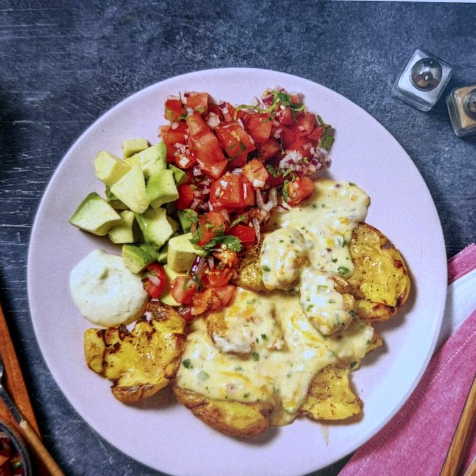

Hauptgericht
Loaded Smashed Potatoes
Ein HelloFresh-Rezept: zerdrückte, im Ofen knusprig gebackene Kartoffeln mit einer würzigen Jalapeño-Käse-Sauce, dazu Pico de Gallo und Avocado. Vegetarisch und mit frischem Gemüse, aber durch Käse, Butter und Crème fraîche auch reichhaltig – daher Gelb statt Grün, ein Gericht für zwischendurch statt für jeden Tag.

Zutaten (2 Personen)
- 600 g Kartoffeln (Drillinge)
- 1 rote Zwiebel
- 1 Limette, gewachst
- 1 Knoblauchzehe
- 20 g Butter
- 200 ml Milch
- 100 g Käse-Mix
- 1 Avocado
- 2 Tomaten
- 1 Jalapeño
- 75 g Crème fraîche
- 10 g Koriander
- Öl, Mehl, Zucker, Salz, Pfeffer
Zubereitung
- Den Backofen auf 250 °C Ober-/Unterhitze (230 °C Umluft) vorheizen. Gemüse und Kräuter waschen.
- Kartoffeln in einen großen Topf geben, mit Wasser bedecken, kräftig salzen und aufkochen. Mit Deckel 12–15 Min. kochen, bis sie gar sind.
- Währenddessen Zwiebel und Knoblauch fein hacken. Jalapeño halbieren, entkernen und fein hacken. Tomaten grob würfeln. Koriander fein hacken. Limette heiß abwaschen, Schale abreiben und die Limette vierteln.
- Für das Pico de Gallo Tomatenwürfel mit der Hälfte des Korianders, der Hälfte der Zwiebel, etwas Limettensaft und 1 EL Öl vermengen, mit Salz, Pfeffer und Zucker abschmecken. Für den Limetten-Dip die Hälfte der Crème fraîche mit 1 TL Limettenabrieb verrühren und mit Salz und Pfeffer abschmecken.
- Gekochte Kartoffeln abgießen, auf einem Backblech mit Backpapier verteilen und mit einem Topfdeckel flach drücken. Mit 2 EL Öl beträufeln, salzen, pfeffern und 6–8 Min. im Ofen knusprig backen.
- Für die Käsesoße Butter in einem kleinen Topf erhitzen, Knoblauch, Jalapeño und restliche Zwiebel 2–3 Min. andünsten. 1 EL Mehl einrühren und kurz mitschwitzen, dann unter Rühren die Milch dazugeben und 1–2 Min. einkochen lassen. Vom Herd nehmen, Käse und restlichen Koriander unterrühren, mit Salz und Pfeffer abschmecken.
- Avocado würfeln. Smashed Potatoes anrichten, mit der Käsesoße toppen, Pico de Gallo und Avocado dazugeben, mit dem Limetten-Dip und restlichen Limettenspalten servieren.
Rezept von HelloFresh.